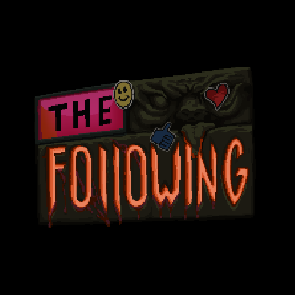

< projects >
The Following - Composer and Sound Designer
You're a small-time streamer, whose dreams are haunted by an ancient celestial being; complete challenges and amass your following to appease them and grow their congregation. Check it out here
info
on this page, lies a comprehensive list of the projects i have worked on over the years. from video games, to music videos and more, feel free to browse through and give your eardrums an aural massage.